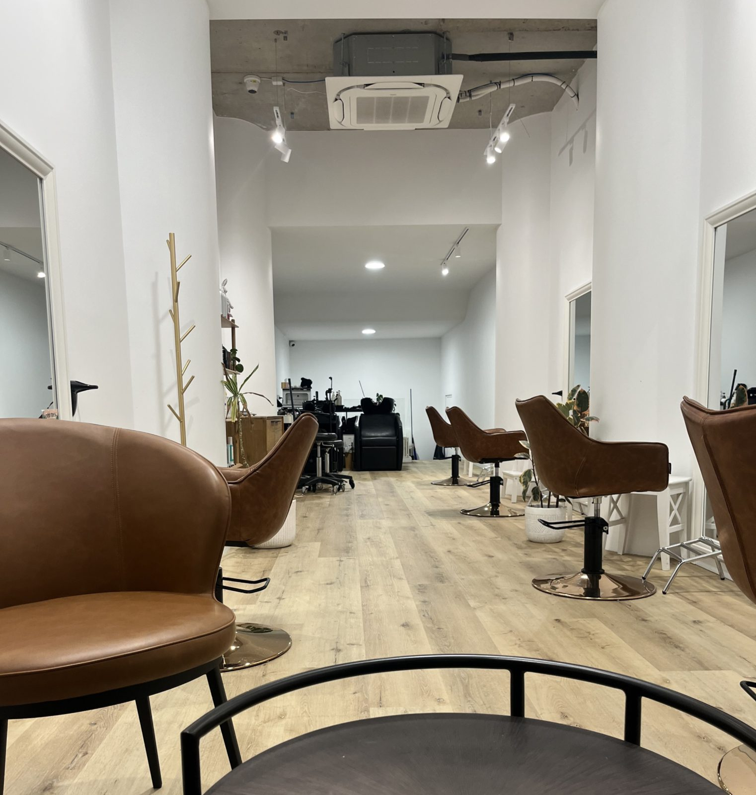

Our original salon — where Koko Hair Artistry began.KOKO Hair Artistryの始まりの場所。
@koko_hair_art →Koko Tokyo — our second chapter, same technique.Koko Tokyo — 同じ技術を、もう一店舗で。
@koko_tokyo0117 →Whichever door you walk through, Koko Hair Artistry brings Tokyo-trained technique to Sydney — specialising in Japanese straightening and deep repair treatments.どちらの店舗も、東京仕込みの技術をシドニーで。縮毛矯正と本格的なリペアトリートメントを得意としています。
Precision straightening, Japanese technique日本式の精度の高い技術
Deep hair repair treatment本格的なヘアリペアトリートメント
Full menu, pricing and booking via each salon's Instagram.詳しいメニュー・料金・ご予約は各店舗のInstagramから。